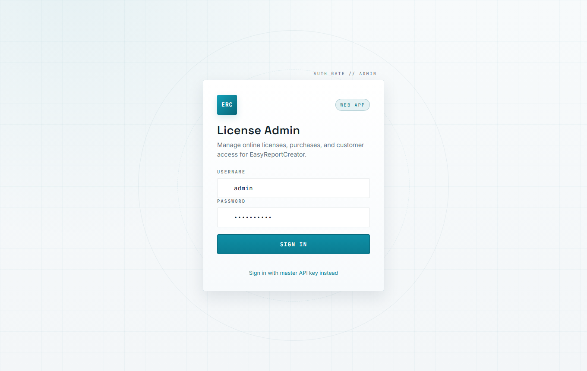
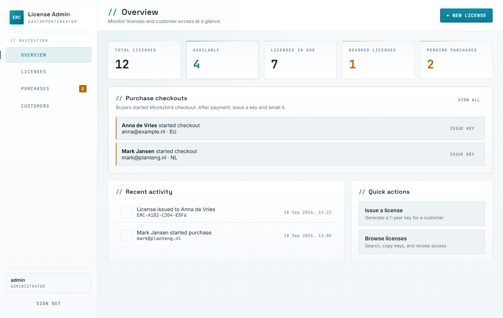
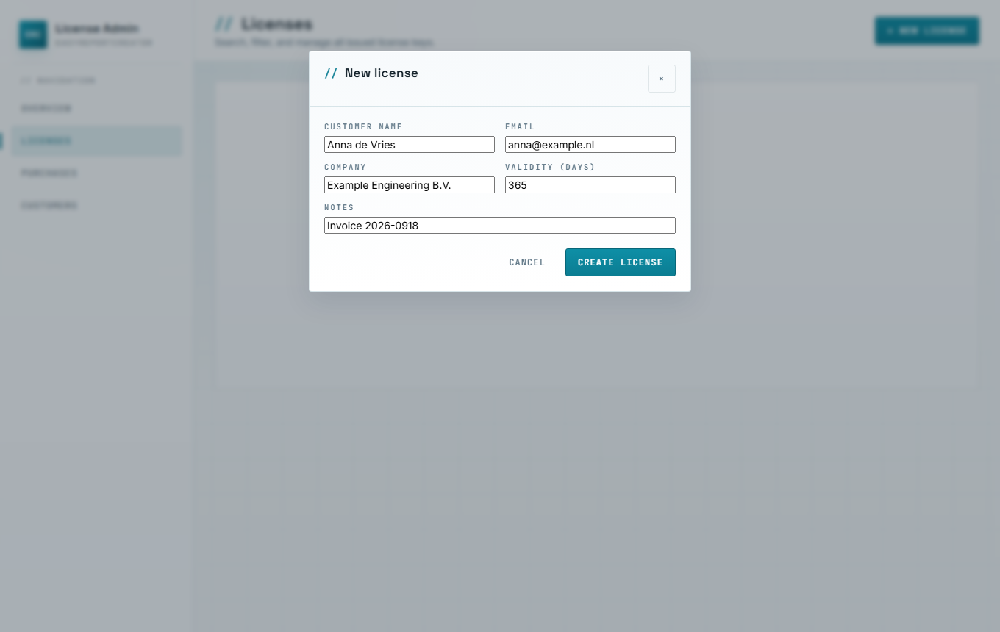
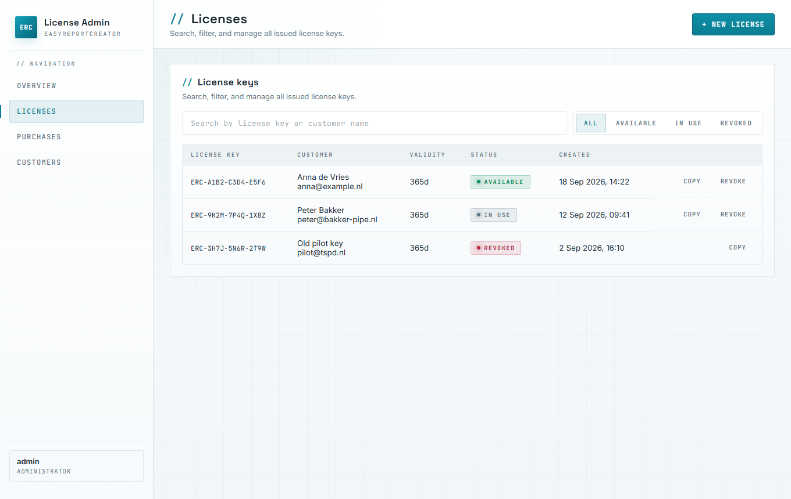
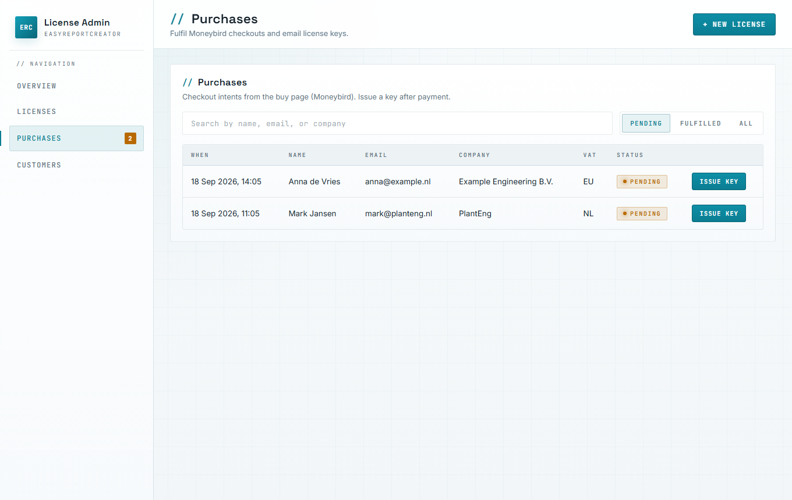
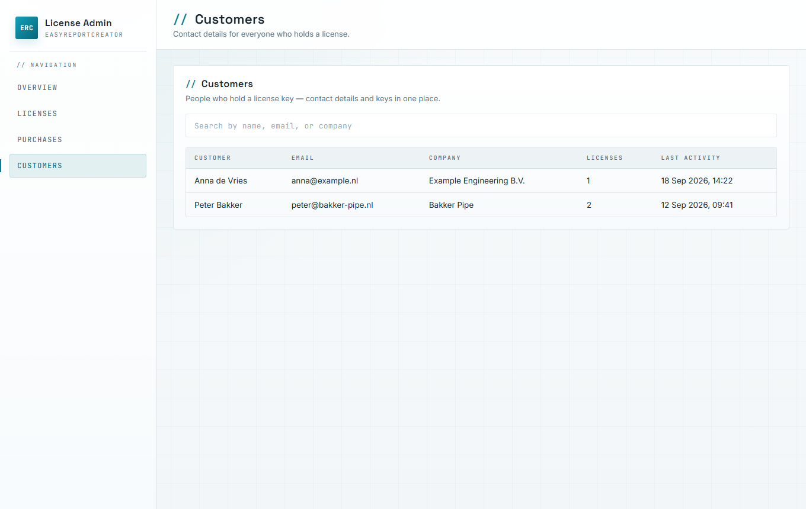

EasyReportCreator — issuing and managing 1-year licence keys
| Document | ERC-OPS-LIC-001 |
|---|---|
| Product | EasyReportCreator (web) |
| Audience | TSPD operators / support |
| Admin URL | https://easyreportcreator.com/admin/ |
| Revision | B — 26 Sep 2026 (light-theme UI screenshots) |
| Status | Internal use |
This guide walks through day-to-day licence work in the License Admin panel: signing in, creating a key by hand, fulfilling a Moneybird purchase, copying the key for the customer, and revoking access when needed. The admin interface uses a light theme (white / pale grey surfaces with teal accents). Screenshots show sample data for illustration only.
1. Purpose and access
2. Signing in
3. Overview dashboard
4. Issuing a licence manually
5. Fulfilling a Moneybird purchase
6. Finding, copying and revoking keys
7. Customers list
8. What to tell the customer
9. Quick reference
Licence model in short: 7-day trial on register → 1-year key (ERC-XXXX-XXXX-XXXX) → 365 days counted from activation in the report app, not from the moment you issue the key.
Use License Admin when you need to create a key, finish a paid checkout, or revoke a key. Customers never use this panel; they activate keys under Licence in the report application.
| Task | Screen |
|---|---|
| See totals and pending checkouts | Overview |
| Create a key by hand | Licenses → New license |
| Issue a key after Moneybird payment | Purchases (or Overview) |
| Copy or revoke a key | Licenses |
| Look up holders | Customers |
Admin credentials are stored on the server in website/inc/config.local.php (admin_username, admin_password, admin_api_key). Do not put passwords in email or chat.

Figure 1. Sign-in screen (light theme). Prefer username/password for daily work; keep the master key for emergencies.
After login you land on Overview. The cards show how many keys exist, how many are still available, how many are in use, how many were revoked, and how many purchase checkouts are waiting for a key.
When someone starts checkout on the public Buy page, a row appears under Purchase checkouts. After you confirm payment in Moneybird, click Issue key on that row (see section 5).

Figure 2. Overview with sample pending purchases. The badge on Purchases in the sidebar mirrors the pending count.
Use + New license in the top right when you need a key that is not tied to a Moneybird intent (invoice paid offline, pilot grant, replacement key).
This is the usual path for support grants and offline payments.
Click + New license (toolbar) or open Licenses and start a new key from there. The form asks for customer details and validity.

Figure 3. New license dialog. Validity defaults to 365 days. Notes are for your records (invoice number, ticket id, etc.).
| Field | Guidance |
|---|---|
| Customer name | Person who will receive the key |
| Address you will send the key to | |
| Company | Optional; helps later search |
| Validity (days) | Leave at 365 unless agreed otherwise |
| Notes | Optional internal reference |

Figure 4. Licenses list after issue. Status available means the key is not activated yet; in use means a company has activated it.
When a buyer uses Buy on the public site, the system stores a purchase intent and sends them to Moneybird. After payment is clear on your side:

Figure 5. Purchases — pending filter. Issue key creates the licence, marks the intent fulfilled, tries to email the buyer, and copies the key to the clipboard.
If the toast says email could not be sent, paste the key into a normal email. Do not click Issue key twice on the same purchase; the second attempt will fail because the intent is already fulfilled.
On Licenses you can search by key, name or email, and filter by status:
| Filter | Meaning |
|---|---|
| All | Every issued key |
| Available | Issued, not yet activated |
| In use | Activated on a company account |
| Revoked | Blocked; cannot be used |
Copy puts the key on the clipboard. Revoke asks for confirmation, then blocks the key. If it was already active, that company loses access. Revocation is permanent for that key — issue a new one if the customer should regain access.
Customers is a read-only view built from issued keys. Use it to find contact details before you create a replacement key or chase an unpaid fulfilment.

Figure 6. Customers derived from licence records (sample data).
After you send a key, include something close to the following:
Remind them that Plant 3D does not need to be running — only their ProcessPower.dcf file — and that the 365 days start at activation.
| Symptom | What to try |
|---|---|
| Login fails | Check credentials in server config.local.php |
| Empty dashboard | Refresh; confirm you are still signed in |
| “Already fulfilled” | Find the existing key under Licenses by email |
| Customer says key invalid | Check format, not revoked, not used on another account |
| Email missing | Copy from Licenses and resend; ask them to check spam |
End of ERC-OPS-LIC-001 · Revision B · Prepared for TSPD internal use · Screenshots reflect the light-theme License Admin UI as of Sep 2026 (sample records).